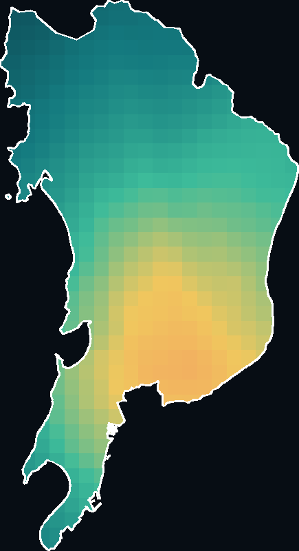
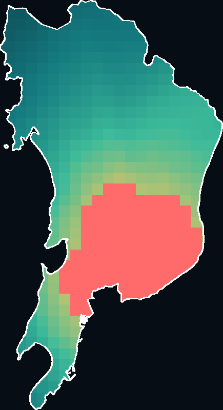
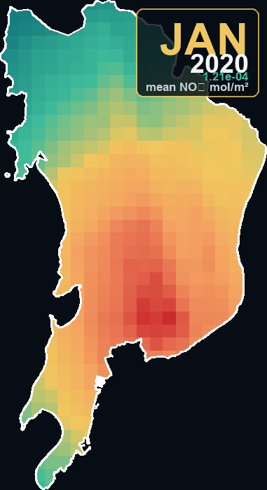

Annual mean tropospheric NO₂, 2020. Cloud-masked Sentinel-5P OFFL L3; units mol/m².
Question 2 · Google Earth Engine urban analysis
A 2020 analysis of tropospheric NO₂ from Sentinel-5P and WorldPop age–sex structures for Greater Mumbai. Maps share one fixed colour scale; “relatively high” NO₂ means the city-wide upper quartile (P75).
Annual mean and exposure panels use the same teal → gold → coral scale (0–0.0002 mol/m²). Coral marks the city-wide highest-NO₂ quartile (P75+). The white line is the Greater Mumbai ULB boundary.


Every monthly frame keeps the same extent and colour range, so the GIF and time slider show seasonal change rather than a shifting legend.
City-wide monthly mean tropospheric NO₂ (relative heights).

City-wide means peak in December–February and fall from April through August. December is highest (~1.68×10⁻⁴ mol/m²); May is lowest (~2.53×10⁻⁵ mol/m²).
Lower monsoon values partly reflect fewer clear scenes after cloud masking
(cloud_fraction ≤ 0.2), not only cleaner air.
Interactive time slider · open full screen
About 2.38 lakh of 7.32 lakh WorldPop residents aged 65+ live in pixels at or above the 75th percentile of 2020 mean tropospheric NO₂ (32.6%).
| Metric | Value |
|---|---|
| City-wide mean tropospheric NO₂ | 8.61×10⁻⁵ mol/m² |
| Highest-quartile threshold (P75) | 1.04×10⁻⁴ mol/m² |
| Residents aged 65+ (city total) | 7,31,666 |
| Residents aged 65+ in highest-NO₂ quartile | 2,38,328 |
| Share of 65+ in highest-NO₂ quartile | 32.57% |
| Month | Mean NO₂ | Relative to annual mean |
|---|
Population living in areas with relatively high satellite-observed column NO₂ — not personal or ground-level exposure.
Spatial result. Higher 2020 mean tropospheric NO₂ concentrates over denser built-up and traffic-intensive parts of Greater Mumbai. On Sentinel-5P’s coarse ~3.5–7 km grid, the P75 mask forms a contiguous “relatively high” core rather than street-level hotspots.
Exposure result. Roughly one-third of modelled residents aged 65+ fall inside that high-NO₂ zone. Because WorldPop is a residential surface, the share reflects where older residents are estimated to live relative to the annual NO₂ field, not individual exposure histories.
Temporal result. The monthly series shows a clear winter peak and monsoon trough under a fixed colour scale. Treat monsoon dips cautiously: cloud filtering reduces usable observations in those months.
The analysis uses tropospheric_NO2_column_number_density from
COPERNICUS/S5P/OFFL/L3_NO2 for 2020, masks
cloud_fraction > 0.2, and averages annually and monthly inside
one Greater Mumbai ULB boundary. WorldPop
pop_age_sex_cons_unadj (India, 2020) age bands from 65 upward
are summed; high-NO₂ pixels are those ≥ the city-wide 75th percentile.
Sentinel-5P pixels (~3.5–7 km) cannot resolve neighbourhood or roadside differences inside Mumbai.
NO₂ here is a tropospheric column density, not ground concentration or individual exposure.
Cloud masking and monsoon cover reduce valid observations, especially in June–August.
WorldPop age–sex counts are modelled residential estimates at ~100 m, not a census microdata extract.
Boundary:
Greater Mumbai ULB (dataset/Mumbai_boundary.geojson, code 802794)
from the
Indian urban-boundary release.
Raster:
Copernicus Sentinel-5P NO₂ and WorldPop age–sex (Earth Engine).
Notebook: question2/trial.ipynb.